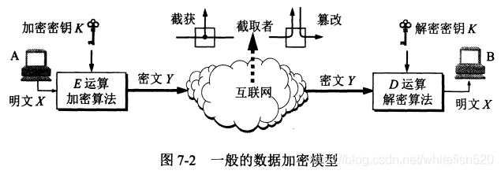
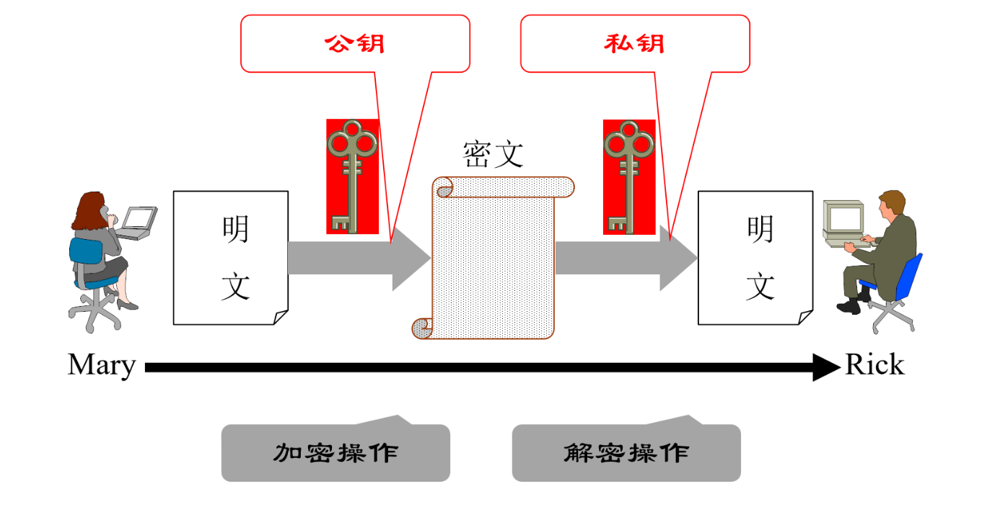
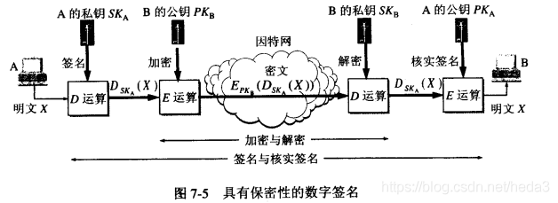

网络安全专题

网络安全问题概述
网络通信威胁分类
- 截获，指窃听他人的通信内容
- 中断，指有意中断干扰他人的网络通信
- 纂改，指故意更改网络上传输的报文
- 伪造，指伪造信息在网络上传输
攻击类型
被动攻击
上述威胁中只有截获是被动攻击，被动攻击是截获信息的攻击，攻击者只是观察和分析某一个协议数据单元(Protocol Data Unit)而不干扰信息流，被动攻击积累到一定程度，当攻击者对被攻击者的行为有相当程度的了解后，就会转化为主动攻击
主动攻击
更改信息和恶意阻止用户使用资源的攻击称为主动攻击，攻击者对某个连接中通过的PDU进行更改数据流、拒绝报文服务、伪造连接初始化等处理，上述威胁中的后三种都属于主动攻击
网络通信安全的目标
- 防止攻击者析出报文内容
- 防止攻击者进行通信量分析
- 检测报文流是否受到更改
- 检测拒绝报文服务，典型的攻击案例是DOS攻击，攻击者利用TCP三次握手的特性不断尝试与服务器连接，消耗服务器的资源
- 检测伪造初始化连接，一般的攻击方式是伪造IP与端口
计算机网络安全的内容包含保密性、安全协议的设计和访问控制
恶意程序
$Malicious~Program$
计算机病毒
通过修改其他应用程序，将自身或其变体复制到其中的程序
计算机蠕虫
通过网络的通信功能，将自身从一个节点发送到另一个节点并自动启动运行的程序
特洛依木马
执行了超出其声明的功能（通常是负面功能）
逻辑炸弹
当运行环境满足某种条件时就执行其他特殊功能的程序
数据加密模型

通过数据加密，攻击者即使截获了密文的内容，他也无法理解其传递的数据内容
密码学
$Cryptology$，可以分为密码编码学(Cryptography)和密码分析学(Cryptanalysis) ，其中密码编码学是密码体制的设计学，而密码分析学则是在未知密钥的情况下从密文推演到明文或密钥的技术
密码体制安全性
无条件安全
如果不论截获了多少密文，都无法通过密文中的信息唯一确定出对应的明文，则称此密码体制无条件安全，或称为理论上不可破，无条件安全在理论上是不可能的
计算上安全
如果密码体制中的密钥不能被可使用的计算资源破译，或很长一段时间内也无法破译，则称为计算上安全
对称密钥和公钥密码
对称密钥密码体制
指加密密钥与解密密钥相同的密码体制，这种加密系统也称为对称密钥系统
数据加密标准DES
$Data~Encryption~Standard$
属于常规密钥密码体制，是一种分组密码，加密时对整个明文进行分组，每组64位，然后分组加密，最后将密文串联起来，密钥为64位，其中有效长度为56位，有8位用于奇偶校验
其保密性仅取决于密钥的保密性，但算法是公开的，至今为止破译DES的最有效方法仍然是穷举搜索密钥，因此DES是世界上第一个公认的实用密码算法标准，对密码学的发展做出了重大贡献，目前暴露出的问题是密钥的长度
公钥密码体制
指使用不同加密密钥和解密密钥的密码体制，由已知加密密钥推导出解密密钥在计算上不可行
其产生是缘于常规密钥密码体制的密钥分配问题和对数字签名的需求，目前最著名的公钥密码体制是RSA体制，基于数论中大数分解问题

加密密钥是公开信息，故称为公钥(Public Key, PK)，而解密密钥需要保密，称为私钥或秘钥(Secret Key, SK)，加密与解密算法也同样公开，其中私钥由公钥决定，但由公钥计算出私钥是计算不可行的
加密的过程如下，例如A需要给B发送加密数据$X$，就用B的公钥对其进行加密得到$E_{PK_B}(X)$，发送给B后，B用自己的私钥对其进行解密，得到$D_{SK_B}(E_{PK_B}(X)) = X$，加密密钥则不能用来解密，即$D_{PK_B}(E_{PK_B}(X)) \not= X$
加密与解密的过程也可以交换，即$E_{PK_B}(D_{SK_B}(X))=D_{SK_B}(E_{PK_B}(X))$，保证了数据双向传输能够正常加密/解密，计算机上可以很容易生成成对的公钥和密钥，但是从公钥到密钥的推导仍然是不可行的
两者比较
任何加密方法的安全性均取决于密钥的长度，一般来说密钥越长，破译密文需要的计算量就越大，计算需要的期望时间就越长，这方面上公钥密码体制不优于传统密钥体制，但公钥的加密算法的开销较大，且公钥的分配需要密钥分配协议支持，传统密钥体制一段时间内还不会被淘汰
数字签名
数字签名的功能
- 报文鉴别，接收者需要能够核实发送者对报文的签名
- 报文的完整性，发送者不能抵赖对报文的签名
- 不可否认，接收者不能伪造报文的签名
由于只有发送方才有自己的私钥，所以对应的数字签名密文只能由发送方产生，这样接收方就可以信任其发送的内容；如果发送方抵赖其发送的内容，接收方可以将签名密文和对应明文交给第三方，第三方通过公钥解密后就可以证实报文确实是由发送方发送的；如果接收方转发报文，但对报文的内容进行修改，即伪造报文，则当第三方使用发送方的公钥进行验证时无法对应，证明接收方伪造了报文
数字签名的公钥机制实现
数字签名的机制可以在公钥密码体制的基础上简单地实现，即先签名，再加密，也称为具有保密性的数字签名

防火墙
$Firewall$是由软硬件合作构成的系统，是一种特殊编程的路由器，用来再两个网络之间实施接入控制策略，以解决内联网和外联网的安全问题
防火墙内的网络称为可信赖的网络(trusted network)，外部的因特网称为不可信赖的网络(untrusted network)
防火墙的功能与分类
防火墙的功能由阻止(deny)和允许(permit)构成，即阻止或允许具备某些条件的报文通过防火墙进入外网/内网
网络级防火墙
功能是防止网络出现外来非法入侵，例如分组过滤和授权服务器，其中分组过滤服务器检查所有流入本地网络的信息，拒绝不符合准则的数据，授权服务器检查用户的登录是否合法
应用级防火墙
功能是从应用程序来进行接入控制，通常使用应用网关或代理服务器来区分不同的应用，即可以做到只允许HTTP服务，拒绝FTP应用的通过
标准ACL
$Standard~Access~Control~List(s)$
按照permit ... ...或者deny ... ...的语法顺序排列的列表，列表编号在1到99之间，具备短路执行的特征，通常以deny any结尾以拒绝所有不满足条件的报文，前面的语法中第一个参数是IP地址，第二个参数是反掩码(wildcard-mask)
通配符掩码
$Wildcard~Mask$，也称为反掩码，与子网掩码具有相同的格式，但意义不同
子网掩码的1表示对应位是网段ID，0表示对应位属于主机ID
而通配符掩码的0表示在检查时需要匹配该位，1则表示检查时不需要匹配该位
例如deny 192.168.2.0 0.0.0.255的规则会丢弃来自192.168.2.1的报文，但不会拒绝来自192.168.1.1的报文
标准ACL的正确配置位置
由于标准ACL不包含目的信息，所以应该尽可能地配置在离目的地近的位置，否则会影响其他主机对报文的接收，但是如果发送报文后被防火墙拒绝可能会导致中间链路的流量损耗
扩展ACL
$Extended~ACL$
扩展ACL可以根据目的地址、使用的协议(例如deny rip 192.5.5.0 0.0.0.255)、甚至更高层的协议（例如HTTP协议,permit ip any any neq 80）来进行筛选过滤，列表编号在100到199之间
参数
扩展ACL的格式为
access-list {access-list-number 100~199} {permit/deny} protocol {src src-wildcard-mask dest dest-wildcard-mask} [option]
例如access-list 101 permit ip 192.168.1.0 0.0.0.255 192.168.2.0 0.0.0.255允许网络192.168.1.0/24访问网络192.168.2.0/24的IP流量通过
access-list 101 deny tcp 192.168.1.0 0.0.0.255 host 192.168.2.2 0.0.0.255 eq 21拒绝网络192.168.1.0/24访问FTP服务器192.168.2.2/24的IP流量通过
access-list 101 deny icmp 192.168.1.0 0.0.0.255 host 192.168.2.2 0.0.0.255 echo禁止网络192.168.1.0/24中的主机ping通服务器192.168.2.2/24
端口与服务对应列表
| 端口号 | 应用 |
|---|---|
| 21 | FTP |
| 23 | Telnet |
| 25 | SMTP |
| 53 | DNS |
| 69 | TFTP |
| 80 | HTTP |
扩展ACL的正确配置位置
由于扩展ACL可以根据源与目的的地址进行筛选过滤，为了避免标准ACL中间链路的流量损失问题，应将扩展ACL配置在距离发送方尽可能近的位置
别名ACL
Cisco的路由器支持通过指定标准还是扩展来用自己的方式命名ACL，避免了最多只有100个访问控制列表且不好记忆的问题，例如
ip access-list standard myACL
就使用myACL命名了一个标准ACL